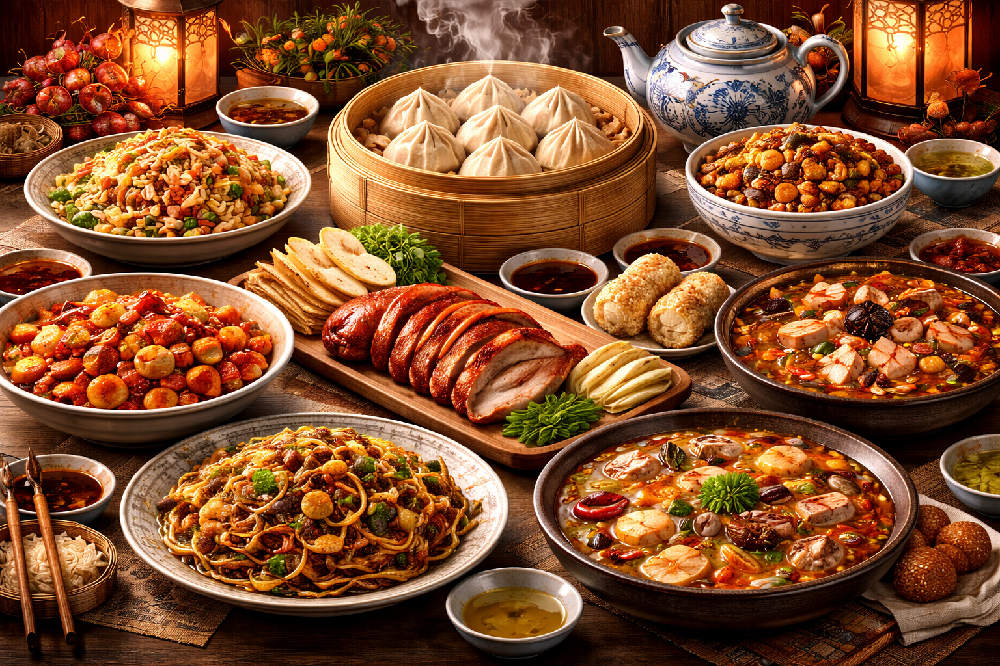

Um pouco sobre
A culinária chinesa é uma das mais ricas e diversificadas do mundo, resultado de milhares de anos de história e da variedade geográfica do país. Cada região desenvolveu seus próprios sabores e técnicas, criando estilos distintos como o cantonês, o sichuanês e o pekinês.
Os pratos chineses valorizam o equilíbrio entre aroma, sabor, textura e aparência. Além disso, a alimentação está profundamente ligada ao conceito de yin e yang. Métodos de preparo rápidos e cortes precisos são marcas registradas de uma cozinha que entende a refeição como um momento de união social e preservação de saúde.
Tradições e costumes
As tradições culinárias estão ligadas à convivência e ao simbolismo. Durante festivais, pratos como o peixe representam prosperidade, enquanto o macarrão simboliza longevidade.
O uso de hashis e o serviço em porções coletivas incentivam a partilha. O respeito à hierarquia também é fundamental, onde os mais velhos têm prioridade à mesa, tornando a refeição um ato de respeito e preservação cultural.
Pratos típicos
Destacam-se o famoso Pato de Pequim, com sua pele crocante, e o Dim Sum, seleção de pequenos pratos servidos com chá. Arroz frito e noodles são bases populares consumidas em todo o mundo.
A região de Sichuan contribui com sabores picantes intensos, enquanto dumplings e pratos à base de tofu completam o cardápio diário, refletindo a criatividade técnica infinita da gastronomia chinesa.
Ingredientes e modo de preparo
A base da cozinha inclui vegetais frescos, arroz, carnes, frutos do mar e molhos essenciais como o de soja e óleo de gergelim. A harmonia entre o doce, salgado, amargo e picante é o objetivo final de cada chef.
Técnicas como o salteado rápido em wok, o cozimento a vapor e a fritura leve preservam os nutrientes e o frescor. O corte preciso dos alimentos não é apenas estético, mas garante um cozimento uniforme e rápido, refletindo a eficiência milenar da tradição culinária.
